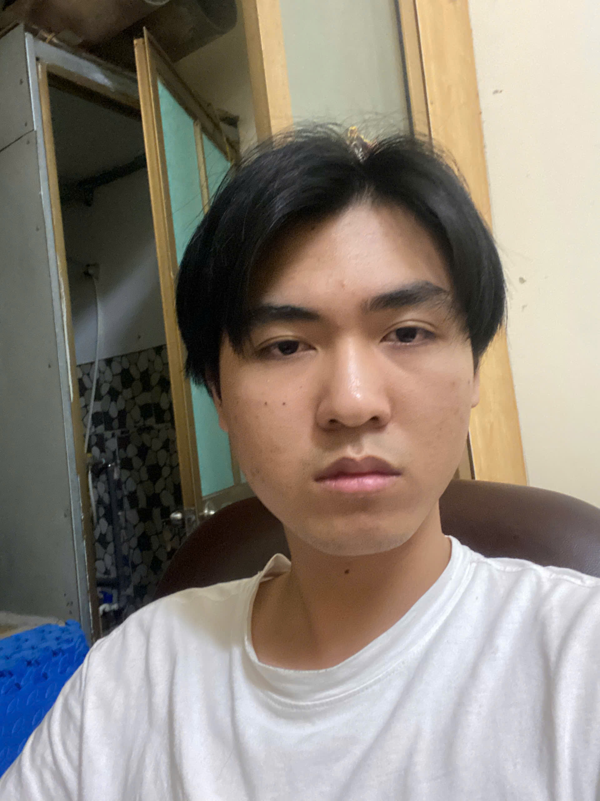

Học sinh lớp 12

Họ và tên: Trần Tuấn Khang
Ngày sinh: 30/10/2008
Quê quán: Hưng Yên
Giới thiệu: Em là học sinh lớp 12A,môn học yêu thích là môn toán , .
Mình thích nghe nhiều thể loại nhạc hầu như đều nghe được. Tuy nhiên, mình không hợp với nhạc rock hay rap do mình thấy nó hơi ồn,khó nghe .
Âm nhạc mang đến cho mình rất nhiều ý nghĩa. Nó không chỉ giúp mình cảm nhận những cảm xúc khó diễn tả mà còn gắn liền với những kỷ niệm trong cuộc sống. Mỗi khi nghe nhạc EDM, mình lại nhớ về những ngày tháng cấp hai đầy vui vẻ bên bạn bè. Còn những giai điệu vui nhộn,hài hước như “Crazy Frog” lại gợi nhớ đến khoảng thời gian mình còn học ở trung tâm tiếng Anh với những thầy /cô vui tính, thân thiện và đầy nhiệt huyết. Với mình, âm nhạc không đơn thuần là một hình thức giải trí, mà còn là cách lưu giữ những ký ức và cảm xúc theo thời gian.
Một số nghệ sĩ mà mình thích như: Luke Chiang ,Keshi ,starfall ,Fujii Kaze ,Porter Robinson...
Niềm yêu thích của mình đối với game bắt đầu từ khi còn nhỏ, khi các anh chị họ đã giới thiệu và cho mình trải nghiệm những tựa game thú vị. Chính những lần chơi game cùng họ đã tạo nên ấn tượng ban đầu và dần nuôi dưỡng niềm đam mê của mình đối với thế giới game.
Do khả năng chơi game của mình khá kém nên mình thường thích chơi những game có cốt truyện thú vị,nhân vật có chiều sâu hay có phong cách nghệ thuật ấn tượng.
Một số tựa game mình yêu thích như:the legend of zelda ,little nightmare ,...
Dù mình không hay xem phim nhưng nhưng mình vẫn có sự yêu thích nhất định cho nó .Đôi khi, phim mang lại cho mình những bài học sống quý giá và cách đối xử với người khác.
Có một bộ phim mà mình rất ấn tượng là “Tuổi thơ bá đạo của Sheldon”, nội dung phim khá là nhẹ nhàng và thư giãn. Mình đã xem hết cả 7 phần và cảm nhận rõ tìnhcảm gắn bó giữa các thành viên trong gia đình. Dù đôi lúc xảy ra mâu thuẫn hay mắc sai lầm, họ vẫn luôn ở bên nhau, cùng vượt qua khó khăn và sẵn sàng giúp đỡ lẫn nhau.
Em xin gửi lời cảm ơn chân thành tới thầy cô và các bạn vì đã luôn đồng hành và hỗ trợ em trong suốt thời gian qua. Kính chúc thầy cô và các bạn lớp 12A luôn mạnh khỏe, hạnh phúc và gặt hái được nhiều thành công trên con đường phía trước.